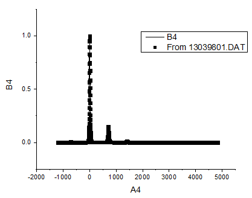

|
作図のセットアップダイアログで3つのパネルを全ての表示するために 詳細な情報は作図のセットアップで作図を参照してください。 |

Originは、以下の画像のようなインセットグラフ付きパネルグラフの作図が可能です。
必要なOriginのバージョン: Origin 2015 SR0以降
このチュートリアルでは、以下の項目について説明します。
このチュートリアルは、チュートリアルデータプロジェクト（<Origin EXE フォルダ>\Samples\TutorialData.opj）と関連しています。
|
作図のセットアップダイアログで3つのパネルを全ての表示するために 詳細な情報は作図のセットアップで作図を参照してください。 |
| ワークシート名 | Xとして設定 | Yとして設定 |
|---|---|---|
| Original name: BOS | A1 | B1 |
| Measured | C | D |
| ワークシート名 | Xとして設定 | Yとして設定 |
|---|---|---|
| Original name: BOS | A2 | B2 |
| Measured | A | B |
次のステップでは、軸スケールの設定と、グラフ重要な部分を表示するための軸破断の追加を行います。